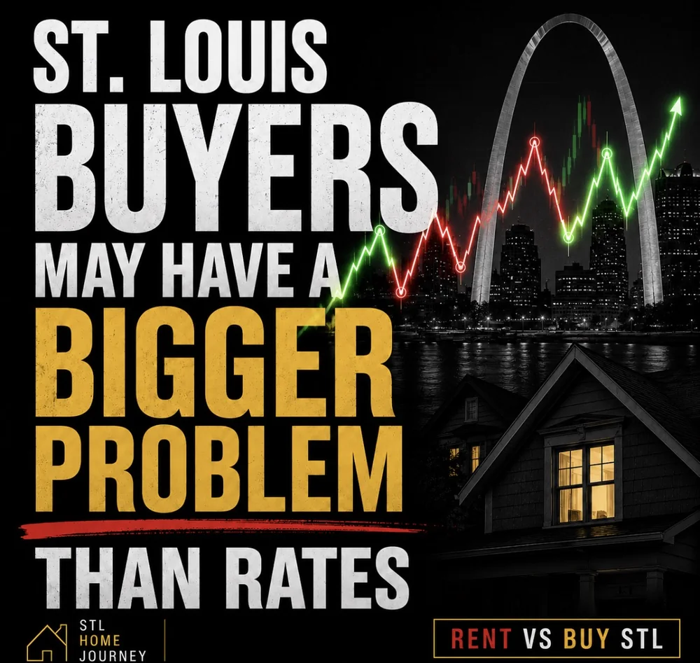

Last updated November 23, 2026
Yes, if the payment works for you at today’s rate and the right house is on the market. Not yet, if you’d be stretching your budget in a price range where homes sell fast: there, wait for fall or go after listings that have sat. In 2026, 53% to 55% of homes that closed in May through July sold above asking, against 30% in January, and homes that sat 61 to 90 days sold at a median 93.4% of their original price. Waiting only for rates to fall usually means buying when everyone else does. A flat yes can’t be right for every buyer, so here’s how to tell which one you are.

From 2,864 single-family sales across 22 St. Louis County-area school districts, January 1 through October 5, 2026. “Above asking” means above the original list price. See the tables ↓
Yes, if the payment works for you at today’s rate and the right house is on the market. Not yet, if you’d be stretching your budget in a price range where homes sell fast: wait for fall or go after listings that have sat. In 2026, 53% to 55% of homes that closed in May through July sold above asking, compared with 30% in January. Timing by situation ↓
Not if you’re waiting for less competition. When rates fall, the buyers who were waiting tend to come back at the same time, so competition and prices can rise with them. Decide on the payment you can afford now, not on a rate forecast.
Fall and winter bring less competition; spring and summer bring more homes and more competition. In 2026, 30% to 36% of January and February sales went above asking, and 38% to 41% in August and September, versus 53% to 55% in May through July. Five years of sales by month →
Not across the board. The median 2026 sale closed at 100% of its original list price and 46% sold above it. Discounts showed up on homes that sat: those on the market 61 to 90 days sold at a median 93.4% of their original price, and those past 90 days at 88%.
If you need to sell before you can buy, list at the end of winter, around February, when prices and competition start to pick up; you catch some of the demand without carrying two mortgages, and you can buy quickly as spring inventory comes on. If you’re buying first, buy in spring, when there’s more inventory, and sell in summer, when demand is lower than spring but stronger than winter.
Use this to choose a market strategy, not to calculate loan qualification or payment capacity. I’ll ask about the price range you’re shopping in, whether your current home must sell first, and when you need to act.
Pick a price range to see how its 2026 sales went: the share sold above asking, median days on market and the share with a price cut.
Your range in 2026 closed sales:
Financing check: This doesn’t show your mortgage payment, debts, down payment, cash reserves, or approval terms. Confirm those separately before deciding that buying now is affordable. Check your buying power.
Ranges use the 2026 sales in Competition by Price Range. Nothing you pick leaves this page.
“Is this a good time to buy?” is the question most first-time buyers ask me. Mortgage rates are higher than many buyers would like, affordability is tight, and the headlines keep predicting what the Federal Reserve will do next. So a lot of buyers have moved to the sidelines, waiting for a signal.
The problem is that they’re not alone. Thousands of other buyers are watching the same headlines and waiting for the same rate cuts.
Most buyers assume lower rates make buying easier. Sometimes the opposite happens. When rates fall, payments improve, more buyers qualify and more decide it’s finally time to move. Showings rise, and so does competition. The same rate cut that helps one buyer helps thousands of them.
Think back to every spring market in recent memory. The market didn't suddenly become cheap. Mortgage rates didn't collapse overnight. Inventory didn't double. Yet competition exploded. Why? Because buyer confidence changed. More buyers felt comfortable moving forward. That confidence created more showings, more offers, and more competition.
Want to run the numbers yourself? The STL Home Buying Power Calculator shows what you can afford based on your income, debt and down payment, before rates change anything.
What a St. Louis purchase costs per month
I’d start with the June 2026 single-family median closed price of $379,500 (the 2026 sales by month below). At the 7.28% national average 30-year fixed rate Freddie Mac reported on November 19, 2026, a 20% down payment ($75,900) leaves a $303,600 loan. The resulting principal-and-interest payment is approximately $2,077 a month.
How I calculated it: $303,600 financed over 360 monthly payments at 7.28% annual interest, fully amortizing. The 20% down assumption follows Freddie Mac’s survey borrower profile; the down payment, loan amount and payment are calculations from the $379,500 sale price and the cited rate, not market observations. This is principal and interest only, not a full housing payment: property tax, insurance, HOA dues, maintenance, and any mortgage insurance are excluded. Freddie Mac’s survey represents excellent-credit, conventional conforming borrowers, not a personal quote.
Source: Freddie Mac Primary Mortgage Market Survey, November 19, 2026; my 2026 County-area single-family closed sales, June 2026. I’d check the complete monthly cost with the St. Louis buying power calculator and an actual lender quote before deciding to buy.
Planning a move rather than timing rates? The best time to move in St. Louis, from five years of sales →
That’s why I don’t give blanket advice on timing. I’m strategic about it, and the strategy depends on where you’re starting.
First-time buyer help: I’d check the St. Louis first-time buyer programs guide for FHA and MHDC options before deciding what cash you need to bring.
If your debt-to-income is near its limit and you’re shopping where homes sell fast, don’t fight the spring crowd. Wait for fall, or look at listings that have sat. In 2026, homes that took 61 to 90 days to sell closed at a median 93.4% of their original price, and those past 90 days at 88%. Against their reduced prices, they still closed at 97% to 98%, so the discount is mostly in the price cuts already made.
If you qualify comfortably and your price range has more homes to choose from, fall or spring both work. Fall gives you less competition; spring gives you more homes to compare.
Fall isn’t a guarantee, though. A well-priced Fenton house I listed in November drew about 20 showings and three offers at $300,000. The Winter Park sale →
The more must-haves on your list, the fewer homes fit, and the more you’ll compete for each one. Narrow your list to what truly matters and you’ll have more houses to choose from in any season. For offers when you do compete, see how to compete without overpaying.
If you have to sell before you can buy, list at the end of winter, around February. Prices and competition start to pick up then, so you catch some of the demand without being on the hook for two mortgages, and you’re ready to buy quickly when more inventory comes on in spring. If you’re buying first and selling second, buy in spring, when there’s more inventory, and sell in summer: buyer demand isn’t as strong as spring, but it’s stronger than winter. Should you sell first or buy first? →
Before I’d write an offer: get the financing decision clear
I’d ask for a document-reviewed mortgage pre-approval, not rely only on a quick pre-qualification. A pre-qualification is often based on buyer-reported information; a pre-approval usually involves a lender checking income, assets, credit and debts, though neither guarantees final underwriting or a rate. I’d compare lender estimates and ask when any rate lock expires.
What I’d have ready: photo identification, recent pay statements, employment history, tax returns or self-employment documentation where applicable, bank and asset statements, debt obligations, down-payment source, and an explanation of unusual deposits. The lender may request more.
My offer-ready checklist:
Process reference: Consumer Financial Protection Bureau, Buying a House. This is a practical preparation sequence, not a claim that pre-approval guarantees financing.
Single-family sales across 22 St. Louis County-area school districts, by closing month. October is left out because only part of the month is in the data.
Takeaway: Less buyer competition does not automatically mean a lower price for a comparable house. The homes that closed each month were different; compare like-kind properties before judging value.
| Closed | Sales | Median price | Sold above asking | Median days on market |
|---|---|---|---|---|
| January | 185 | $273,000 | 29.7% | 26 |
| February | 191 | $270,000 | 35.6% | 18 |
| March | 233 | $350,000 | 48.5% | 13 |
| April | 338 | $307,500 | 45.0% | 7 |
| May | 332 | $364,500 | 54.8% | 7 |
| June | 468 | $379,500 | 54.9% | 6 |
| July | 407 | $334,000 | 52.8% | 7 |
| August | 372 | $341,550 | 41.1% | 16 |
| September | 310 | $302,750 | 38.1% | 17 |
The same 2026 sales, grouped by sale price.
| Sale price | Sales | Sold above asking | Median days on market | Had a price cut |
|---|---|---|---|---|
| Under $200,000 | 716 | 25.3% | 25 | 33.9% |
| $200,000–$249,999 | 250 | 40.4% | 12 | 25.2% |
| $250,000–$299,999 | 286 | 52.1% | 8 | 15.0% |
| $300,000–$399,999 | 490 | 55.9% | 6 | 16.7% |
| $400,000–$499,999 | 332 | 55.4% | 6 | 19.0% |
| $500,000–$749,999 | 436 | 54.6% | 6 | 19.0% |
| $750,000 and up | 354 | 54.5% | 5 | 15.0% |
The same 2026 sales, grouped by days on market.
| Days on market | Sales | Median sale vs. original price | Median sale vs. final price | Sold above asking |
|---|---|---|---|---|
| 0–7 | 1,309 | 103.7% | 103.7% | 74.4% |
| 31–60 | 508 | 97.4% | 99.0% | 24.8% |
| 61–90 | 186 | 93.4% | 98.1% | 11.8% |
| 91 or more | 204 | 88.0% | 97.0% | 5.4% |
My move on a longer-listed home
I’d use the 93.4% of original price for homes listed 61–90 days and 88.0% for homes past 90 days as reasons to investigate, not as automatic offer percentages. I’d check price reductions, condition and comparable sales, then make an offer based on today’s value rather than the seller’s first asking price.
A City home sat more than 90 days after two failed contracts. Days after my buyer went under contract, the seller offered $30,000 off before a single inspection. How my buyer got $30,000 off →
Another reason buyers feel confused is because inventory numbers don't tell the entire story. Technically, inventory has improved compared to the extreme lows of previous years. Yet many buyers still feel like they have limited choices. How can both things be true? Because there are really two housing markets operating at the same time.
These are the homes buyers actually want. Updated kitchens. Updated bathrooms. Solid roofs. Modern systems. Little or no deferred maintenance. These homes continue to attract attention quickly because buyers value certainty. In many parts of South County, Oakville, Affton, Mehlville, Arnold, and St. Charles County, move-in-ready homes can still generate multiple offers when priced correctly.
The average price of move-in-ready homes in St. Louis varies dramatically by area — from under $220K in Lemay to over $600K in Kirkwood. Understanding that spread is the starting point for every buyer's search.
Where I’d look next: I’d compare the St. Louis neighborhood guides before deciding what your budget buys; location and property condition matter more than a metro-wide headline.
What the neighborhood changes
I’d compare actual closed sales by community rather than assuming one metro median describes the house you can buy. These are my own 2026 closed-sales figures from each neighborhood guide, sales inside each city’s limits from January through early October 2026, not matched homes and not the County-area tables on this page.
| Community | Sales | Median sale price | Median days on market |
|---|---|---|---|
| Maplewood | 17 | $295,000 | 5 |
| Webster Groves | 82 | $444,500 | 5 |
| Kirkwood | 80 | $566,750 | 6 |
| Chesterfield | 120 | $685,000 | 8 |
Source: MLS sales records (MARIS), 2026 closed sales inside each city, as published on each neighborhood guide. Days on market is the median cumulative days on market (CDOM).
This is where much of the inventory growth is occurring. Older roofs. Older HVAC systems. Outdated interiors. Deferred maintenance. Many buyers are simply unwilling or unable to take on major projects in today's environment. As a result, these homes often sit longer, experience price reductions, and contribute to rising inventory counts. This is why housing inventory in St. Louis can increase while desirable homes still feel competitive.
2.9 months of supply · St. Louis City + County, single-family, October 2026, MARIS / St. Louis REALTORS
I’d use 2.9 months as a broad supply benchmark, not a promise of choices in any particular price range. It means the single-family homes for sale in St. Louis City and County in October 2026 would take about that long to sell at the current sales pace if nothing new came on the market. Inventory was 3,815 homes, up 11.9% from October 2025. Move-in-ready houses in a specific neighborhood can still compete heavily even as inventory rises.
Source: MARIS / St. Louis REALTORS October 2026 Housing Report, St. Louis City + County, single-family. This covers the City and County together; it is not the same area as my 22-district St. Louis County sales tables on this page.
Many buyers read headlines suggesting inventory is improving and assume finding a home should be easier. Then they start touring. Suddenly they're competing for the same move-in-ready properties as everyone else. The inventory numbers are technically correct. But buyers don't purchase statistics. They purchase homes. And the condition of those homes matters.
Today, buyers are often paying premiums for certainty rather than square footage. A newer roof. A newer HVAC system. An updated kitchen. A home that doesn't immediately require $20,000 to $40,000 in repairs. That certainty has become extremely valuable. Understanding what $300K, $450K, and $600K actually buys in today's St. Louis market is one of the most useful things a buyer can do before starting a search.
Whether to rent or buy comes down to how long you’ll be in the house more than to this month’s market. Buying and then selling again costs money on both ends, so a short stay rarely leaves time for the house to pay that back. The longer you stay, the more of each payment goes to equity instead of rent. The full rent-vs-buy guide →
2-year horizon
Rent
The cost of getting into a house and selling it again usually eats any equity gain in a 2-year window. Stay liquid, save the down payment, and buy when you expect to stay four years or more.
5-year horizon
Buy, if the payment works
Five years gives equity time to build. From Q1 2021 to Q1 2026, the FHFA price index for the St. Louis metro rose 46.6%: a $350,000 house bought in 2021 gained about $163,100 (the model below). Past gains aren’t a forecast.
The rent-vs-buy guide’s worked example: a $220,000 South County home with 5% down at a 6.75% example rate (an illustration, not today’s rate), with property taxes of about $2,460 a year, 1.12% of the price. All in, owning runs about $1,935 a month; compare that with a real lease quote for a similar house.
| Cost component | Buying ($220K, 5% down) |
|---|---|
| Principal + interest | $1,364/mo |
| Property taxes | $205/mo |
| Homeowner’s insurance | $110/mo |
| PMI (5% down) | $73/mo |
| Maintenance reserve (1%/yr) | $183/mo |
| Total monthly | $1,935/mo |
Put an actual rent figure beside the payment
I’d start a rent-versus-buy comparison with $1,298 per month, the St. Louis, Missouri–Illinois metro median asking rent for studio, one-bedroom and two-bedroom properties in October 2026. That is not the rent for a comparable single-family house. I wouldn’t call the difference between that rent and an ownership cost an apples-to-apples savings estimate: the property types and geographies differ, and ownership carries taxes, insurance, maintenance and transaction costs.
Source: Realtor.com October 2026 Rent Report, as reported by First Alert 4, November 18, 2026. I’d use the rent-versus-buy comparison with a real lease quote and a complete mortgage estimate.
From Q1 2021 to Q1 2026, the FHFA All-Transactions House Price Index for the St. Louis metro rose from 218.39 to 320.16, or 46.6%. On a $350,000 house bought in Q1 2021, that’s about $513,100 by Q1 2026 and $163,100 in equity from price growth alone. Switch to the next five years for an illustration at a conservative 2.5% a year.
Mortgage rates matter. Inventory matters. Prices matter. But the right time to buy is the one that fits your budget, your price range and your plans, not the one everyone else is waiting for. Sometimes the biggest risk isn’t buying before everyone else. It’s buying with everyone else.
Competition
Under $200,000. In 2026, 25% of those sales went above asking, the median took 25 days and 34% had a price cut. From $250,000 up, 52% to 56% sold above asking in a median 5 to 8 days.
Ask your agent to pull homes that have been on the market 30 to 60 days or more, and homes with a price cut. In 2026, homes past 60 days sold at a median 88% to 93% of their original price.
Your plan
It depends on how long you’ll stay and what you’d pay either way. Run the rent-versus-buy comparison →
Month to month, renting usually costs less at first. In the rent-vs-buy guide’s example, owning a $220,000 house with 5% down runs about $1,935 a month all in. Over a stay of under two years, renting usually wins once you count the cost of buying and selling; over five years or more, buying usually comes out ahead as equity builds. Rent or buy by how long you’ll stay ↑ · Rent-vs-buy guide →
Under 15 generally favors buying; over 20 generally favors renting. That’s a common rule of thumb, not a St. Louis statistic. To find it, divide the home’s price by a full year of rent for a comparable house. At a ratio of 15, a $220,000 house would rent for about $1,222 a month; if similar houses rent for more than that, the ratio is under 15. Rent-vs-buy guide →
It comes down to how long you plan to stay. If you’re staying five years or more and the payment works at today’s rates, buying now makes sense: you’ve got time to ride out short-term swings in either direction. If you’re planning to move within two years, renting probably costs you less once you count transaction costs. The market matters less than how long you’ll be in the house. Rent-vs-buy scenarios →
Two things. First, rent doesn’t build equity: every month you rent is money that isn’t going toward a home of your own. Second, prices can keep rising while you wait. In 2026, the median sale closed at 100% of its original list price, and 46% sold above it. That’s the real cost of waiting. It doesn’t mean waiting is always wrong: it makes sense if you have a specific reason to expect your situation to improve, like a raise, a debt paid off, or a down payment saved. But waiting for prices or rates to drop on their own isn’t a plan. Nobody can reliably predict where either will be next spring. The real cost of waiting ↑
Enough for the down payment and closing costs, plus six months of house payments in reserve, regardless of what your loan program requires. Down payment and reserves →
Most buyers focus on mortgage rates. The bigger question is how rising prices, rent payments, inventory quality, and future competition affect your situation.
Both are designed specifically for St. Louis buyers.
Asking an AI chat about this? Copy a St. Louis prompt that points it here →
Before you click “Request more information” on a listing, read who calls you in the next five minutes. Details →